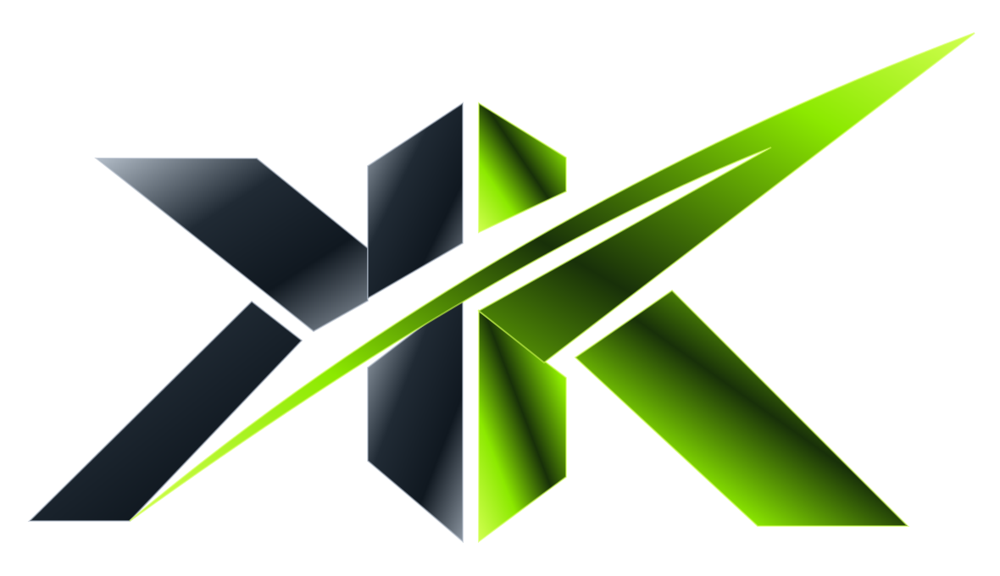

Пространство для заказчиков
Ваш сайт.
Здесь и сейчас.
Откройте сайт целиком или выберите просмотр с размерами экранов и комментариями.
Загрузка проектов…

KorneyПространство для заказчиков
Откройте сайт целиком или выберите просмотр с размерами экранов и комментариями.
Загрузка проектов…